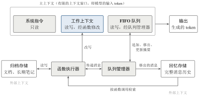
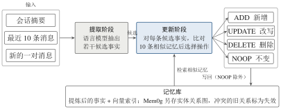
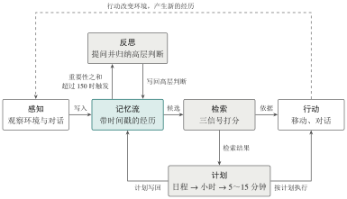
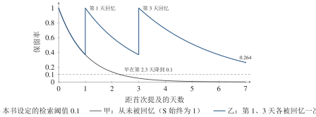
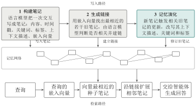
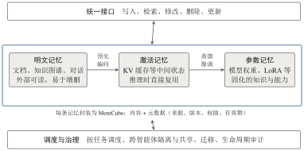

8.2 代表性记忆系统
第 8.1 节说明了记忆应当保存什么、经历哪些环节。系统实际上怎样把状态写进去、组织起来，并在下一次任务中找出来？本节沿生命周期拆解几条代表性路线：MemGPT/Letta 用操作系统的分层思想管理有限窗口，Mem0 把提取与更新做成低开销的工程接口，Generative Agents 让记忆驱动反思与计划，MemoryBank 给记忆加上遗忘曲线，A-MEM 让记忆互相链接并演化；再简述 Reflexion、Voyager、LongMem、HippoRAG、Zep、MemOS 等补充路线，以及用来检验它们的 LoCoMo 基准。结论是：这些系统各自把生命周期的某一段做深，而且各论文的评测口径不同，无法排出统一的名次；选型要先看任务需要哪类状态。
8.2.1 发展脉络：从扩大窗口到组织状态
2023 至 2025 年间，多数记忆系统的出发点是“上下文窗口不够用”，但解法逐渐变化。最早的工作想让有限窗口“看起来更大”；随后人们发现，更关键的是把信息分层、提炼、更新和路由。具体说，有四个方向的变化：
记忆对象从原始对话变成提炼后的事实、结构化笔记和关系网络；
写入方式从“遇到就追加”变成合并、修正和遗忘；
检索方式从单一的相似度匹配变成多信号打分、按类型路由和图遍历；
维护时机从每次回答前同步完成，部分转移到后台异步整理。
这些变化都没有绕开成本和可靠性，只是把复杂度从上下文窗口转移到了存储、索引和更新策略上。各系统的时间、机构和评测结论汇总在第 8.2.9 小节的表 8-13 中。
8.2.2 MemGPT 与 Letta：把上下文当作内存来管理
MemGPT 由加州大学伯克利分校团队于 2023 年 10 月提出[6]，核心思想是虚拟上下文管理。它借用操作系统的分层存储：内存小而快，磁盘大而慢，程序需要的数据由操作系统在两者之间换入换出。对应到语言模型，窗口内的内容相当于内存，称为主上下文；窗口外的数据库相当于磁盘，称为外部上下文。与操作系统不同的是，决定“换入什么、换出什么”的不是固定算法，而是模型自己：它通过函数调用（function calling）发出读写请求，由系统执行。
图 8-3 给出了 MemGPT 的结构，表 8-10 列出各部分的职责。主上下文分为三块：只读的系统指令，说明控制流程和可用的记忆函数；可读写的工作上下文，存放关键事实与用户偏好，只能通过函数修改；FIFO 队列，即滚动的消息历史，第一条是对已被移出消息的递归摘要。外部上下文分为两块：回忆存储保存全部消息历史，包括已被移出窗口的消息；归档存储保存任意长度的文本，如文档和长期笔记。

图 8-3 MemGPT 的结构（据文献 [6]的图重画）。上方为主上下文，即模型每次能看到的全部输入；下方两侧的归档存储与回忆存储位于窗口之外。模型通过函数执行器读写工作上下文和归档存储、检索回忆存储；队列管理器负责消息进出 FIFO 队列，并把被移出的消息写入回忆存储
表 8-10 MemGPT 的存储层级
| 位置 | 组成部分 | 保存什么 | 怎样读写 |
|---|---|---|---|
| 主上下文 | 系统指令 | 控制流程、记忆函数的用法 | 只读 |
| 工作上下文 | 关键事实、用户偏好、当前角色 | 模型调用函数改写 | |
| FIFO 队列 | 最近消息 + 已移出消息的递归摘要 | 队列管理器追加与移出 | |
| 外部上下文 | 回忆存储 | 完整的消息历史 | 队列管理器写入；模型调用函数检索 |
| 归档存储 | 文档、长期笔记等任意文本 | 模型调用函数读写 |
换入换出怎样触发？队列管理器监视窗口占用：达到“警告阈值”（论文举例为窗口的 70%）时，向模型插入一条“内存压力”提示，让它抓紧把重要信息写进工作上下文或归档存储；达到“刷新阈值”（例如 100%）时，按比例（例如一半）移出最早的消息，写入回忆存储，并更新递归摘要。模型每次函数调用后可以要求立即继续执行下一步（类似操作系统的分页调度），也可以交出控制权、等待下一个事件（论文称为 yield）。这种“模型发起调用—系统执行—结果回到模型”的循环，正是第 6.3 节所讲的智能体循环在记忆管理上的应用。
在多会话聊天的“深度记忆检索”（Deep Memory Retrieval，DMR）任务中，模型要回答关于很早以前会话的问题。论文报告，GPT-4 单独作答的准确率为 32.1%，加上 MemGPT 后为 92.5%[6]。代价也很明显：记忆质量取决于模型是否在正确时机写入和检索，函数调用能力弱的模型（论文中的 GPT-3.5）表现明显变差；模型也常在没翻完归档存储时就停止检索。
2024 年 9 月，MemGPT 的开源项目并入 Letta 公司，代码和包名改为 Letta[7]。Letta 把工作上下文进一步拆成多个记忆块（memory block），每块有标签、字数上限和当前值，例如“用户偏好”一块、“当前任务”一块，代理可以有针对性地改写其中一块，开发者也更容易看懂当前记忆。2025 年 4 月，该团队提出睡眠期计算（sleep-time compute）[8]：在用户还没提问的空闲时段，另一个“睡眠期代理”预先整理上下文、推断可能的问题，并改写主代理的记忆块。论文在改造过的数学推理任务上报告，达到同样准确率所需的测试时计算约减少到原来的五分之一。代价是后台计算仍要花钱，异步写入还会带来时序问题：主代理可能在整理完成之前又产生了新信息。
辨析
MemGPT 与 Letta。MemGPT 指 2023 年论文提出的设计模式：模型通过工具自己编辑分层记忆。Letta 指承载这一模式的工程框架和公司，提供持久化代理、记忆块、工具与数据源管理等功能。讨论概念贡献时说 MemGPT，讨论现在可用的软件时说 Letta。
8.2.3 Mem0 与 Mem0g：先提取，再决定增删改
Mem0 团队在 2025 年 4 月发表的论文中，把目标定得更接近生产环境：在持续对话中动态提取、整合和检索要点，不必每次都重新处理完整历史[9]。它与“向量数据库加搜索”的关键区别是一个两阶段流程（图 8-4）。
提取阶段：每来一对新消息（用户一句、助手一句），系统把三样东西交给语言模型——数据库里的会话摘要、新消息之前的最近 \(m\) 条消息（论文取 \(m=10\)）、这对新消息——让它抽出若干候选事实，例如“用户对坚果过敏”“用户下周三出国开会”。
更新阶段：对每条候选事实，先从向量库中检索语义最接近的 \(s\) 条已有记忆（论文取 \(s=10\)），再让语言模型通过函数调用在四种操作中选一种：ADD（新增）、UPDATE（用新信息补充或改写某条旧记忆）、DELETE（删除被新信息否定的旧记忆）、NOOP（已有等价记忆，不做任何事）。这四种操作就是表 8-4 中追加、修正、合并、删除的一个具体实现。

图 8-4 Mem0 的两阶段流程（据文献 [9]绘制）。提取阶段从新消息及其上下文中抽出候选事实；更新阶段对每条候选事实检索最相近的已有记忆，由语言模型通过函数调用选择四种操作之一，结果写回记忆库
Mem0g 在此基础上增加图结构：把实体（人、地点、事件）存为节点，把关系存为带标签的有向边，例如（用户，居住于，上海）。新信息与旧关系冲突时，系统不直接删除旧边，而是将其标记为失效，以便回答“以前住在哪里”这类时间问题。为什么要多一种组织方式？因为不同查询适合不同的索引（表 8-11）。
表 8-11 查询类型与记忆组织方式
| 查询类型 | 例子 | 适合的组织 | 原因 |
|---|---|---|---|
| 语义相近 | 上周讨论过哪些关于智能体漂移的问题？ | 向量索引 | 召回措辞不同但意思接近的内容 |
| 精确事实 | 用户登记的手机号是多少？ | 键值或关系表 | 按字段直接查找，不需要相似度 |
| 关系推理 | 哪些客户共用同一个开票主体？ | 图 | 沿实体关系做多跳遍历 |
论文在 LoCoMo 基准（第 8.2.8 小节）上用“以大模型作评判”（LLM-as-a-Judge，记为 J 分）比较各方案。Mem0 的 J 分为 66.9%，Mem0g 为 68.4%，OpenAI 的记忆功能为 52.9%；把整段对话全部放进上下文的做法为 72.9%，反而最高。但全量上下文每次查询要处理约 2.6 万个 token，p95 延迟（最慢 5% 请求的延迟）约 17.1 s；Mem0 每次只取回约 1800 个 token 的记忆，p95 延迟约 1.44 s，即论文摘要所说的“p95 延迟降低 91%、token 成本节省 90% 以上”[9]。这组数字很能说明问题：在这个基准上，记忆系统用少量准确率换来了一个数量级的延迟和成本下降。它们是特定实验设置下的结果，不能直接外推到所有业务；图结构也不是越多越好，实体抽取和关系维护都会增加写入成本。
8.2.4 Generative Agents：让记忆驱动反思与计划
斯坦福大学与谷歌的研究者在 2023 年提出 Generative Agents[10]，在一个名为 Smallville 的沙盒小镇中放入 25 个由语言模型驱动的角色，让它们自主起床、工作、聊天，甚至自发组织一场情人节派对。这里的记忆不是一个被动的检索模块，而是决定角色下一步做什么的状态。
每个角色把自己的经历写成带时间戳的自然语言条目，按时间排成记忆流（memory stream）。每次需要决策时，系统按三个信号给每条记忆打分：新近性，距上次被访问过去的游戏小时数为 \(\Delta h\)，得分按 \(0.995^{\Delta h}\) 指数衰减；重要性，条目创建时由语言模型打 1（如“吃早饭”）到 10（如“分手”）的整数分；相关性，条目嵌入向量与当前查询的余弦相似度。三项分别在候选集合内做最小—最大归一化（\(\hat{x}=(x-x_{\min})/(x_{\max}-x_{\min})\)，映射到 0～1）后加权求和： \[s(m)=\alpha_{\mathrm{rec}}\,\hat{s}_{\mathrm{rec}}(m)+\alpha_{\mathrm{imp}}\,\hat{s}_{\mathrm{imp}}(m)+\alpha_{\mathrm{rel}}\,\hat{s}_{\mathrm{rel}}(m), \tag{8-3}\] 论文中三个权重 \(\alpha\) 都取 1。得分最高、能放进窗口的若干条进入当前上下文。
例 8-3 三信号检索打分
角色 Isabella 正在想“周末该邀请谁”。记忆流中有三条候选： \(m_1\)“Isabella 计划 2 月 14 日在咖啡馆办情人节派对”，重要性 8，20 小时前被访问过，与查询的余弦相似度 0.82； \(m_2\)“早上吃了吐司”，重要性 1，1 小时前，相似度 0.35； \(m_3\)“Klaus 在写一篇关于城市变迁的论文”，重要性 5，100 小时前，相似度 0.60。按式 （8-3）、三个权重均为 1 计算：
| 步骤 | 算什么 | 算式 | 结果（\(m_1\) / \(m_2\) / \(m_3\)） |
|---|---|---|---|
| 1 | 新近性原始分 | \(0.995^{20}\)；\(0.995^{1}\)；\(0.995^{100}\) | 0.905 / 0.995 / 0.606 |
| 2 | 新近性归一化 | 最小 0.606，最大 0.995，差 0.389；\((0.905-0.606)\div0.389\) | 0.768 / 1 / 0 |
| 3 | 重要性归一化 | 最小 1，最大 8，差 7；\((5-1)\div7\) | 1 / 0 / 0.571 |
| 4 | 相关性归一化 | 最小 0.35，最大 0.82，差 0.47；\((0.60-0.35)\div0.47\) | 1 / 0 / 0.532 |
| 5 | 总分 | 三项相加 | 2.768 / 1.000 / 1.103 |
数据从哪来：衰减因子 0.995、重要性 1～10、权重均为 1 取自论文[10]；三条记忆的具体数值为本题设定。\(0.995^{20}=\mathrm{e}^{20\ln0.995}\approx\mathrm{e}^{-0.100}\approx0.905\)，\(0.995^{100}\approx\mathrm{e}^{-0.501}\approx0.606\)。
结论：排序为 \(m_1>m_3>m_2\)，派对计划被取回。若只看新近性，排第一的会是刚吃的早饭 \(m_2\)；若只看相关性，\(m_1\) 虽仍第一，但 \(m_2\) 与 \(m_3\) 的差距无法反映“分手”与“早饭”这类重要性差别。多信号打分正是为了避免任何一个信号单独主导。注意归一化是在候选集合内做的，换一批候选，同一条记忆的归一化分数就会变。
光有检索还不够。当最近一批经历的重要性之和超过阈值（论文取 150）时，系统触发反思（reflection）：读取最近约 100 条记忆，让模型提出三个高层问题，再检索相关记忆回答，得出“Klaus 致力于研究”这类带引用的高层判断，并写回记忆流。实际运行中，角色大约每天反思两三次。计划（planning）则自上而下展开：先把一天粗分成五到八段，再细化到小时，最后细化到 5～15 分钟的动作；遇到新的观察时可以修改计划。于是形成一个闭环（图 8-5）：经历写入记忆流，记忆经反思生成概括，概括和检索结果影响计划，计划执行又产生新经历。

图 8-5 Generative Agents 的记忆—反思—计划闭环（据文献 [10]绘制）。记忆流是中心：感知写入经历，反思从中归纳高层判断并写回，计划依据检索结果制定并写回，行动又产生新经历
论文请评估者比较各个变体的回答可信度，用 TrueSkill 评分排序：完整架构得 29.89，去掉反思得 26.88，再去掉计划得 25.64，三者都去掉只剩 21.21，由众包人员扮演角色撰写的回答得 22.95[10]。这说明记忆、反思与计划各有贡献。代价是调用链长，一次行为可能涉及多次打分、反思和计划；反思若把偶发事件概括成稳定特征，错误会进入后续决策；论文也观察到角色有时会给记忆添加原本不存在的细节。
8.2.5 MemoryBank：记忆会遗忘，也会被强化
中山大学等单位的研究者在 2023 年 5 月提出 MemoryBank，论文后来发表于 AAAI 2024[11]。它面向长期陪伴类聊天：保存每天的对话、每日事件摘要和逐步更新的用户画像（性格、兴趣等），用双塔稠密检索把相关记忆取回当前对话。与只会追加的方案相比，它最大的不同是给每条记忆设了生命周期。
这个生命周期借鉴了艾宾浩斯遗忘曲线：记忆随时间衰减，复习会让它衰减得更慢。MemoryBank 用的保留率公式是 \[R=\mathrm{e}^{-t/S}, \tag{8-4}\] 其中 \(R\) 为保留率（0～1），\(t\) 为距上次学习或回忆经过的时间，\(S\) 为记忆强度。论文把 \(S\) 设为离散值：一条记忆首次出现时 \(S=1\)；每当它在对话中被回忆一次，\(S\) 加 1，同时 \(t\) 归零[11]。论文没有限定 \(t\) 的单位；下面的算例和图中按“天”计，这是本书自定的取法，单位取小时或周，同一个公式对应的真实遗忘速度就完全不同。
例 8-4 遗忘曲线与强化
用户第 0 天提到“下个月要考雅思”。比较两种情况：（甲）此后从未被提起；（乙）第 1 天、第 3 天各被回忆一次。另设一条本书自定的规则：保留率低于 0.1 时，该记忆不再参与检索。
| 步骤 | 算什么 | 算式 | 结果 |
|---|---|---|---|
| 1 | 甲在第 3 天的保留率 | \(S=1,\ t=3\)：\(\mathrm{e}^{-3/1}\) | 0.050，已低于 0.1 |
| 2 | 乙在第 1 天回忆前 | \(S=1,\ t=1\)：\(\mathrm{e}^{-1}\) | 0.368；回忆后 \(S=2\)，\(t\) 归零 |
| 3 | 乙在第 3 天回忆前 | \(S=2,\ t=2\)：\(\mathrm{e}^{-2/2}\) | 0.368；回忆后 \(S=3\)，\(t\) 归零 |
| 4 | 乙在第 7 天 | \(S=3,\ t=4\)：\(\mathrm{e}^{-4/3}\) | 0.264 |
| 5 | 各强度下降到 0.1 所需时间 | 由 \(\mathrm{e}^{-t/S}=0.1\) 得 \(t=S\ln10\approx2.303\,S\) | \(S=1\)：2.3 天；\(S=2\)：4.6 天；\(S=3\)：6.9 天 |
数据从哪来：公式与 \(S\) 的更新规则取自论文[11]；阈值 0.1 和时间单位“天”为本书设定。
结论：不被提起的记忆 2.3 天后就退出检索；被回忆两次的记忆到第 7 天仍有 0.264，还要再过约 \(6.9-4=2.9\) 天才降到 0.1。每次回忆既把 \(t\) 归零，又让曲线变平，这就是“经常被用到的记忆越来越牢固”。图 8-6 画出了这两条曲线。

图 8-6 MemoryBank 的遗忘曲线 \(R=\mathrm{e}^{-t/S}\)。灰线为从未被回忆的记忆；青绿线在第 1、3 天各被回忆一次，每次回忆使保留率回到 1、强度 S 加 1，此后衰减变慢（数值见例 8-4）
这种机制让记忆库不会无限膨胀，也让常用信息更容易留下。但它也暴露了一个长期问题：遗忘规则是一种预测，不是事实。某个偏好很久没被提起，不代表它已失效（例如“对花生严重过敏”）；一次情绪化的表达也不该成为稳定画像。论文本身也说明，这是一个探索性的、高度简化的模型。实际系统常把遗忘曲线与重要性、用户的显式标记结合使用。
8.2.6 A-MEM：从独立条目到可演化的记忆网络
罗格斯大学等单位的研究者在 2025 年 2 月提出 A-MEM（Agentic Memory），论文发表于 NeurIPS 2025[12]。它借鉴了卡片笔记法（Zettelkasten）：每条记忆不是孤立的文本块，而是一张带上下文、关键词、标签并与其他卡片相连的笔记。写入分三步（图 8-7）：
构建笔记：把一次交互加工成自包含的笔记，字段包括原始内容、时间戳、关键词、标签、由语言模型生成的上下文描述，以及嵌入向量。
生成链接：用新笔记的嵌入向量找出最相近的若干条旧笔记，由语言模型判断哪些真正相关并建立链接。
记忆演化：新笔记可能改变旧笔记的上下文描述、关键词或标签，使整个网络重新理解过去的信息。旧记忆因此不是写入后就不可更改的。
检索时先用查询向量找到种子笔记，再沿链接带回相邻笔记，即“向量找种子、链接作扩展”。例如用户问“这个项目为什么改了发布时间”，直接命中的可能只是一条会议记录，沿链接还能带回需求变更、供应商延迟和负责人的说明。

图 8-7 A-MEM 的写入与检索（据文献 [12]的图重画）。写入时依次构建笔记、生成链接、演化旧笔记，形成一张笔记网络；检索时先用向量找到种子笔记，再沿链接把相邻笔记一起带回
论文在 LoCoMo 上用六种基座模型做了比较。A-MEM 每次记忆操作约用 1200 个 token，而 LoCoMo 原文方法和 MemGPT 约用 16 900 个；在多跳问题上，A-MEM 的 F1 普遍高于基线，但提升幅度随基座模型变化很大，对 GPT-4o 约为 1.2 倍，对一些小模型可达 2～4 倍[12]。它的代价同样来自“演化”：新记忆会改写旧记忆，系统就必须处理版本、证据和错误传播；一条错误笔记若连接了很多条目，影响会沿网络扩散；建立链接也要额外调用语言模型。
8.2.7 更多路线：经验、技能、模型内记忆与时序图
前面五个系统主要展示了分层存储、事实提取、记忆流、遗忘曲线和笔记网络。还有几条路线从不同方向补充了记忆设计。
Reflexion（2023）[13]：智能体执行任务失败后，根据环境反馈用语言写一段自我反思（“我上次在这里失败是因为……”），存进情景反思记忆，下次尝试时放入上下文。它不修改模型权重，只靠记住教训来改进。论文报告在 HumanEval 编程基准上 pass@1 达到 91%，高于当时 GPT-4 的 80%。
Voyager（2023）[14]：在游戏《我的世界》（Minecraft）中，智能体把成功完成的复杂动作写成可复用的 JavaScript 函数，存入不断扩充的技能库；遇到新任务时检索并组合旧技能。它记住的不是“发生过什么”，而是“这件事以后怎么做”，是程序记忆的直接实现。论文报告获得的独特物品数约为此前最好方法的 3.3 倍，解锁关键科技树节点最快可达 15.3 倍。
LongMem（2023）[15]：主语言模型保持冻结，旁边接一个可训练的残差旁路网络（SideNet），把很长的历史以注意力键值对的形式缓存进记忆库，需要时取回并融合进当前层。它把记忆做进模型的运行机制，记忆长度可扩展到约 6.5 万个 token。
HippoRAG（2024）[16]：受海马体为大脑皮层记忆建立索引的理论启发，用开放信息抽取（Open Information Extraction，OpenIE）从文本中抽出实体和三元组，建成知识图谱；检索时以问题中的实体为起点运行个性化 PageRank（Personalized PageRank，PPR），让相关性沿图传播，从而一步找到需要多跳才能串起来的事实。论文报告在多跳问答上最多提升 20%，且比迭代检索方法 IRCoT 便宜 10～30 倍、快 6～13 倍。
Zep 与 Graphiti（2025）[17]：用时序知识图谱记录事实的有效期。例如（用户 A，偏好，Java）的有效期为 2024—2025，（用户 A，偏好，Python）为 2025 至今。新事实到来时，旧关系被标记为失效而非删除，因此既能回答“现在用什么”，也能回答“以前用什么、何时改的”。论文报告其在 DMR 上的准确率为 94.8%，对照的是 MemGPT 论文中最好的一组结果（配 GPT-4 Turbo 时为 93.4%，与前文配 GPT-4 时的 92.5% 是不同的基座模型），在 LongMemEval 基准上准确率最多提高 18.5%，响应延迟降低约 90%。
MemOS（2025）[18]：把记忆当作和算力、存储同等的系统资源来调度，统一管理三类记忆：明文记忆（文档、知识图谱等外部可读内容）、激活记忆（KV 缓存等推理时的中间状态）和参数记忆（权重及 LoRA 等增量参数）。这是论文第 4.1 节的划分（截至 2026 年 11 月的 arXiv 各版本均如此）。部分介绍资料把图结构记忆单列为第四类，凑成参数、激活、明文、图结构四类；论文中图结构只是组织明文记忆的一种方式，并未单列，所以本书按论文取三类，读到四类说法时可理解为把明文记忆按组织形式又拆了一层。三类记忆都封装成带来源、版本等元数据的 MemCube，可以组合、迁移，也可以相互转化：常用的明文内容可以预先算成 KV 缓存，稳定的知识可以蒸馏进参数。它还考虑多个智能体之间的记忆隔离、共享与生命周期审计（图 8-8）。

图 8-8 MemOS 对三类记忆的统一管理（据文献 [18]的描述绘制）。明文、激活、参数三类记忆都以 MemCube 封装，经统一接口读写，由系统层调度与治理；三类记忆之间可以相互转化，图中只画了两个典型方向
这几条路线可以归纳为四个设计维度：可复用的经验既可以是叙事（Reflexion 的反思），也可以是可执行程序（Voyager 的技能）；记忆既可以放在外部库，也可以与模型运行机制结合（LongMem、MemOS 的激活与参数记忆）；关系和时间可以成为一等索引，而不只是附加字段（HippoRAG、Zep）；异构记忆需要系统层统一治理（MemOS）。
8.2.8 LoCoMo：检验“真的记得”还是“碰巧答对”
前面的系统都在提出机制，LoCoMo 解决的是怎样比较它们。它由北卡罗来纳大学教堂山分校、南加州大学和 Snap 公司的研究者于 2024 年发布，发表于 ACL 2024[19]。数据集有 50 段超长对话，每段平均约 300 轮、9000 个 token，平均跨 19 个会话，最长 35 个会话；对话由语言模型代理根据人物设定和时间事件图生成，再经人工检查修改，以保证长距离一致。它包含三项任务：问答、事件摘要和多模态对话生成。问答部分共 7512 道题，分五类（表 8-12）。
表 8-12 LoCoMo 问答的五类题目
| 类型 | 题数 | 考查什么 |
|---|---|---|
| 单跳 | 2705 | 答案在一个会话内就能找到 |
| 多跳 | 1104 | 需要合并多个会话中的信息 |
| 时序推理 | 1547 | 理解事件的先后与时间间隔 |
| 开放域知识 | 285 | 把对话内容与外部常识结合 |
| 对抗 | 1871 | 无法回答或前提错误的问题，检验系统是否编造 |
论文结果显示，长上下文模型和 RAG 都能改善问答表现，但离人类仍很远：人类的总体 F1 为 87.9，表中最好的模型配置（GPT-3.5-turbo-16K）为 37.8；时序推理和对抗类问题尤其困难[19]。这说明在跨几十个会话的长期对话中，现有系统还不能稳定地找对、用对信息。此后，Mem0、A-MEM、Zep 等系统都把 LoCoMo 作为主要的比较基准。
辨析
LoCoMo 是基准，不是记忆系统。它提供的是统一的“考题”和评分方式，本身不存储、不检索任何记忆。还要注意：各论文在 LoCoMo 上报告的数字，评分方式（F1 或 J 分）、所用模型和题目子集常常不同，不能直接横向比较；分数高也只说明长期对话问答做得好，不能说明系统在权限、纠错、真实延迟等方面适合做个人助手。
8.2.9 横向比较
表 8-13 用统一的维度汇总本节的系统。读这张表时不必找总分最高的一行，而要问：它保存什么？何时修改旧内容？查询时靠什么找到相关信息？它把生命周期的哪一段做得最深？
| 系统 | 时间与机构 | 记忆组织 | 写入与更新 | 检索 | 评测结论 |
|---|---|---|---|---|---|
| 系统 | 时间与机构 | 记忆组织 | 写入与更新 | 检索 | 评测结论 |
| Generative Agents | 2023.04；斯坦福大学、谷歌 | 带时间戳的自然语言记忆流 | 追加经历；反思生成高层判断并写回 | 新近性、重要性、相关性加权 | 消融实验中完整架构可信度最高（TrueSkill 29.89，去掉三者为 21.21） |
| MemoryBank | 2023.05（AAAI 2024）；中山大学等 | 对话、每日摘要、用户画像 | 按遗忘曲线衰减，被回忆即强化 | 双塔稠密检索 | 15 名模拟用户、194 道探测题上展示记忆召回与画像理解 |
| MemGPT / Letta | 2023.10；伯克利（2024.09 并入 Letta） | 主上下文三块 + 回忆存储 + 归档存储；Letta 用记忆块 | 模型调用函数读写；睡眠期代理异步整理 | 函数调用检索、分页翻阅 | DMR 准确率：GPT-4 单独 32.1%，加 MemGPT 92.5% |
| LoCoMo（基准） | 2024.02（ACL 2024）；北卡大学教堂山分校等 | 50 段超长对话，平均 19 个会话 | — | — | 最好模型 F1 37.8，人类 87.9 |
| Mem0 / Mem0g | 2025.04；Mem0 团队 | 提炼后的事实 + 向量索引；Mem0g 加实体关系图 | 先提取，再 ADD、UPDATE、DELETE 或 NOOP；图中旧边标为失效 | 向量相似度；图遍历 | LoCoMo J 分 66.9% / 68.4%，全量上下文 72.9%；p95 延迟 1.44 s 对 17.1 s |
| A-MEM | 2025.02（NeurIPS 2025）；罗格斯大学等 | 结构化笔记 + 链接网络 | 建链并修订旧笔记 | 向量找种子，沿链接扩展 | 每次操作约 1200 token（基线约 16 900）；多跳 F1 提升幅度随模型而异 |
| Reflexion | 2023.03（NeurIPS 2023）；东北大学（美）、普林斯顿大学等 | 语言形式的失败反思 | 每次失败后追加反思 | 放入下一次尝试的上下文 | HumanEval pass@1 91% |
| Voyager | 2023.05；英伟达、加州理工学院等 | 可执行的 JavaScript 技能库 | 成功后写入新技能 | 按任务描述检索技能 | 独特物品数约 3.3 倍，科技树最快 15.3 倍 |
| LongMem | 2023.06（NeurIPS 2023）；加州大学圣塔芭芭拉分校、微软研究院 | 模型内的键值缓存记忆库 | 旁路网络写入缓存 | 注意力层内取回 | 记忆长度约 6.5 万 token |
| HippoRAG | 2024.05（NeurIPS 2024）；俄亥俄州立大学等 | OpenIE 知识图谱 | 抽取三元组建图 | 个性化 PageRank | 多跳问答最多提升 20%，比 IRCoT 快 6～13 倍 |
| Zep / Graphiti | 2025.01；Zep 公司 | 带有效期的时序知识图谱 | 新事实使旧关系失效 | 语义、关键词与图搜索结合 | DMR 94.8%；LongMemEval 最多提升 18.5% |
| MemOS | 2025.07；记忆张量公司、上海交通大学等 | 明文、激活、参数三类记忆，以 MemCube 封装 | 统一调度、迁移与转化 | 按类型调度 | 论文自报多项基准提升，尚缺独立复现 |
比较时可以抓住四条轴。记忆粒度：Generative Agents 保留较多原始经历，Mem0 偏向提炼事实，A-MEM 把原文加工成带说明的笔记。控制方式：MemGPT/Letta 让模型通过工具决定何时读写，MemoryBank 依赖时间与回忆规则，A-MEM 在写入时自动触发建链和演化。生命周期：有的只追加，有的会合并、改写或遗忘。检索方式：全文翻阅、向量召回、多信号打分、图遍历。这些维度之间需要取舍：保留原文利于追溯，但增加噪声；提炼事实便于使用，却可能丢掉语气、例外和因果；图结构擅长多跳，但构图和更新更贵；异步整理降低响应延迟，却增加时序与并发控制的难度。
8.2.10 前沿方向与未解问题
从这些系统回头看，领域积累下来的不是某一种数据库，而是几个稳定的设计问题：写入什么、何时更新、怎样取回、如何遗忘，以及怎样证明有效。围绕这些问题，研究大致沿四个相互关联的方向推进：评估定义什么是“好记忆”，注意偏向决定“记什么”，巩固负责“怎样整合”，强化学习负责“怎样持续优化”。
超越准确率的评估 现有基准大多只测“能否回答关于过去的事实”。一个更完整的评估至少看六个维度：准确回忆，能否在海量历史中找回事实；时间理解，能否判断事件先后与有效期；知识更新，新事实到来时能否正确覆盖旧观念；干扰抵抗，在大量无关对话中能否保持稳定；合理遗忘，能否清除过期、低价值和冲突的数据；认知合理性，遗忘与检索行为是否符合人类认知规律。设想这样一个测试：第 1 周用户说“我主要用 Java”；第 3 周插入大量无关闲聊；第 5 周用户说“我现在主要用 Python”；第 8 周用户要求“用我最熟悉的语言写一段解析代码”。系统会误用旧偏好吗？能过滤掉第 3 周的噪声吗？能解释偏好是何时改变的吗？
认知启发的巩固 现有系统常见的问题是：对话形成孤立片段，重复经历无法抽象，新旧知识难以融合，记得细节却总结不出规律。借鉴人类记忆研究，可以在后台运行一个巩固引擎：由预测误差（新信息与已有预期不符）触发巩固；经注意偏向筛选出值得整合的内容；通过离线重放（在空闲时重新处理近期经历）把相关情景放在一起；抽取出图式（schema），即从多次经历中概括出的一般规则；当旧知识被重新取用并与新信息冲突时进行再巩固（reconsolidation），修改原有结构。目标不是保留更多细节，而是形成稳定、可泛化、可更新的知识。
注意偏向驱动的选择性记忆 智能体每天接收大量输入，真正影响未来决策的只占很少一部分。例如在“谢谢！”“今天天气不错”“我对花生严重过敏，请记住”“以后请优先用 Python 示例”“刚才那段格式有点乱”“下个月项目目标改为大模型”这串输入中，值得长期记住的主要是第三、四、六句。可以设计一个注意偏向评分器，综合与任务和长期目标的相关度、用户的显性与隐性偏好、信息的新颖度与预测误差、情感强度与反馈、未来潜在使用价值，再在三个阶段使用它：选择性编码决定什么有资格写入，选择性巩固决定离线时优先整合什么，选择性检索决定当前任务优先取回什么。
用强化学习学会记与忘 目前的系统大多依赖工程师写死的规则：重要性高于 0.8 才保存、只保留最近 \(N\) 条、超过 30 天自动删除、检索固定取前 \(k\) 条。这些规则难以适应多变的用户和任务。另一种思路是把记忆管理建模为强化学习问题：状态是当前任务上下文和记忆库负载，动作是保存、丢弃、调整巩固强度、剪枝，奖励是长期任务成功率减去存储和检索成本，学到的策略决定不同场景下的最佳记忆动作。核心转变是从“工程师规定怎样记”走向“智能体通过长期反馈学会怎样记”。
仍未解决的问题 事实会随时间变化，系统要区分“曾经为真”和“现在为真”；同一用户在不同任务中偏好不同，需要控制作用域；自动提取和反思可能产生看似合理却未经证实的记忆；异步维护和多代理共享记忆会带来覆盖与并发冲突；记忆数量增长后，延迟、存储成本和隐私风险都会上升。选型时，与其先问“用哪个框架”，不如先回答六个问题：要记的是事实、事件、流程还是关系？一条记忆由谁写入，能否追溯来源？新旧冲突按什么规则处理？读取需要向量、精确键值、时间窗口还是图遍历？延迟和整理成本各能承受多少？用什么任务级指标证明记忆确实改善了结果？
本节要点
MemGPT 让模型用函数调用在主上下文与外部存储之间换入换出；Letta 是它的工程延续。
Mem0 先提取候选事实，再用 ADD/UPDATE/DELETE/NOOP 维护记忆；在 LoCoMo 上以少量准确率换来约 90% 的延迟与 token 下降。
Generative Agents 用新近性、重要性、相关性三信号检索，并以反思和计划形成行为闭环；MemoryBank 用 \(R=\mathrm{e}^{-t/S}\) 实现遗忘与强化；A-MEM 让记忆互相链接并演化。
LoCoMo 是评测基准：长上下文和 RAG 都远低于人类水平，时序与对抗类问题最难。